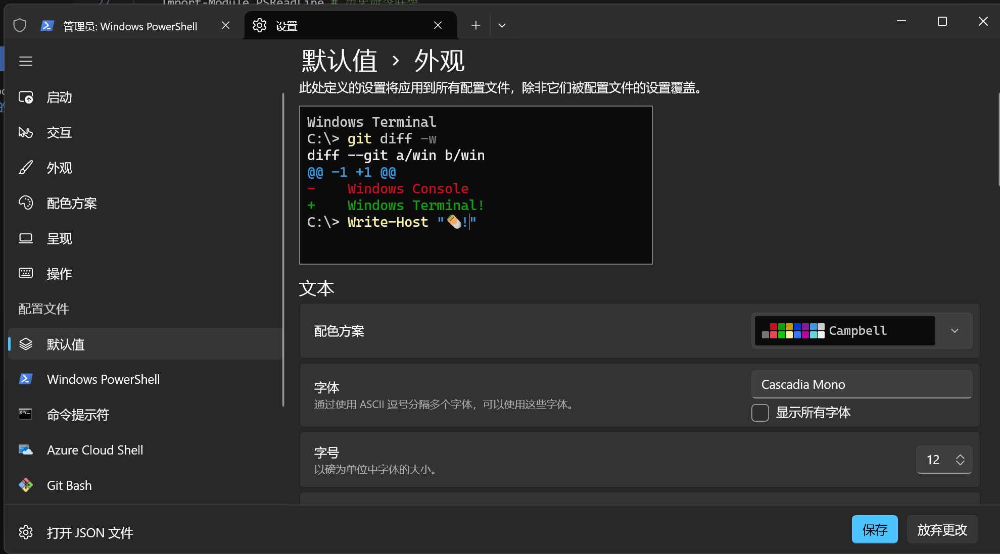

安装oh-my-posh
1
winget install JanDeDobbeleer.OhMyPosh -s winget
配置
1
code $PROFILE
- 按需求配置 PROFILE
1
2
3
4
5
6
7
8
9
10
11
12
13
14
15
16
17#根据爱好设置主题名(exp:robbyrussell)
oh-my-posh init pwsh --config $env:POSH_THEMES_PATH\robbyrussell.omp.json | Invoke-Expression
Import-Module posh-git # 引入 posh-git ➜ ~ Install-Module -Name posh-git -Scope CurrentUser
Import-Module PSReadLine # 历史命令联想
# 设置预测文本来源为历史记录
Set-PSReadLineOption -PredictionSource History
# 设置 Tab 为菜单补全和 Intellisense
#Set-PSReadLineKeyHandler -Key "Tab" -Function MenuComplete
# 每次回溯输入历史，光标定位于输入内容末尾
#Set-PSReadLineOption -HistorySearchCursorMovesToEnd
# 设置向上键为后向搜索历史记录
#Set-PSReadLineKeyHandler -Key UpArrow -Function HistorySearchBackward
# 设置向下键为前向搜索历史纪录
#Set-PSReadLineKeyHandler -Key DownArrow -Function HistorySearchForward
Set-PSReadLineOption -PredictionViewStyle ListView美化
- 字体
- 安装字体
(https://www.nerdfonts.com/font-downloads) - 选择字体

- 安装字体
- 字体
问题汇总
- Get-PSReadLineKeyHandler : 找不到与参数名称“Key”匹配的参数。
1
2
3
4#安装预览版PSReadLine
Install-Module -Name PowerShellGet -Force
#安装预览版PSReadLine
Install-Module PSReadLine -AllowPrerelease -Force
- Get-PSReadLineKeyHandler : 找不到与参数名称“Key”匹配的参数。
oh-my-posh配置手册
本文作者：Berg Zha
本文链接：http://junglemanpro.com/2024/04/04/oh-my-posh%E9%85%8D%E7%BD%AE%E6%89%8B%E5%86%8C/
版权声明：本博客所有文章除特别声明外，均采用 CC BY-NC-SA 4.0 许可协议。转载请注明出处！